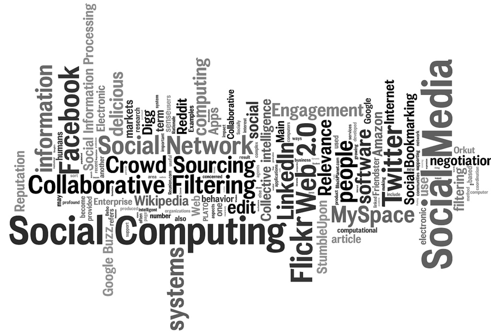

Huy Nguyen – Research/Miscellaneous Projects
SIP: Secure Information Provider Framework for Mobile Phone Users
 |
|
|
The increasing power of the smart phone devices have posed many challenges to the privacy of the information of the device owner. Privacy has become of paramount importance with the explosion of increasingly popular (but malicoius/curious) mobile phone apps. In this research we provide a framework for preventing malious services from accessing users data on his mobile phone without his permission. We show the proposed framework in action with the use of a music recommendation service. We evaluate the usability of the service in presence of our anonymizer framework. | |
Information and Influence Spread on Social Networks
|  | |
|
Influence maximization is the problem of finding a small set of seed nodes in a social network that maximizes the spread of influence under a certain diffusion model. The Greedy algorithm for influence maximization first proposed by Kempe, later improved by Leskovec suffers from two sources of computational deficiency: 1) the need to evaluate many candidate nodes before selecting a new seed in each round, and 2) the calculation of the influence spread of any seed set relies on Monte-Carlo simulations. In this work, we tackle both problems by devising efficient algorithms to compute influence spread and determine the best candidate for seed selection. The fundamental insight behind the proposed algorithms is the linkage between influence spread determination and belief propagation on a directed acyclic graph (DAG). Experiments using real-world social network graphs with scales ranging from thousands to millions of edges demonstrate the superior performance of the proposed algorithms with moderate computation costs. | |
Robust Resource Management in ISM Bands
|
|
Passive monitoring utilizing distributed wireless sniffers is an effective technique to monitor activities in wireless infrastructure networks for fault diagnosis, resource management and critical path analysis. In this research, we introduce a quality of monitoring (QoM) metric defined by the expected number of active users monitored, and investigate the problem of maximizing QoM by judiciously assigning sniffers to channels based on knowledge of user activities in a multi-channel wireless network. Two capture models are considered. The first one, called the user-centric model assumes frame-level capturing capability of sniffers such that the activities of different users can be distinguished. The second one, called the sniffer-centric model only utilizes binary channel information (active or not) at a sniffer. For the user-centric model, we show that the implied optimization problem is NP-hard, but a constant approximation ratio can be attained via polynomial complexity algorithms. For the sniffer-centric model, we devise a stochastic inference scheme that transforms the problem into the user-centric domain, where we are able to apply our polynomial approximation algorithms. The effectiveness of our proposed scheme and algorithms is further evaluated using both synthetic data as well as real-world traces from an operational WLAN. |
|
Multicast Tree Topology Inference
|
Using multicast probes to infer network topologies and internal link/node characteristics is an attractive approach due to its bandwidth efficiency and suitability for large-scale measurements. In this research, we propose a new approach to infer tree topologies by exploiting dependence among end-point receivers. We first show that under the assumption of independent failure of intermediate nodes or links, inferring tree topology is a special instance of the more general problem of binary independent component analysis (bICA), and thus is amiable to existing analytical results and algorithms for bICA. Then, we propose seqBICA that is tailored for tree topology inference. Both analysis and evaluation study show that the proposed algorithm outperforms existing approaches in convergence speed and accuracy even when the number of measurements is small. | |
WiSeR Website
|
Developing websites has been my hobby since I was an undergraduate student. In this work, I use Drupal and MySQL database to remake WiSeR's website. The Wireless System Research Group at the University of Houston conducts research on a variety of communication, networking and system issues in Cyber Physical Systems. Our focus is on advancing the fundamental understanding and development of efficient robust solutions. Our projects span core system building blocks, data and network management tools and services, mathematical principles, and application of wireless communication and networking to scientific, industrial and health-care disciplines. Our research is currently supported by National Science Foundation , UH Grants to Enhance and Advance Research (GEAR), Defense University Research Instrumentation Program (DURIP). |